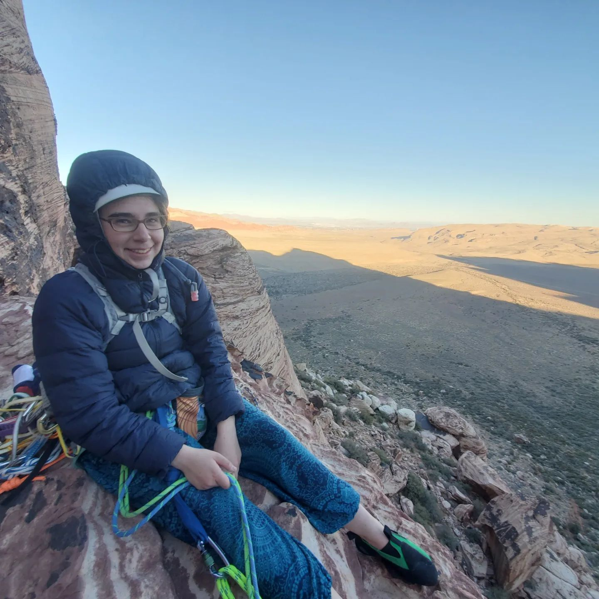
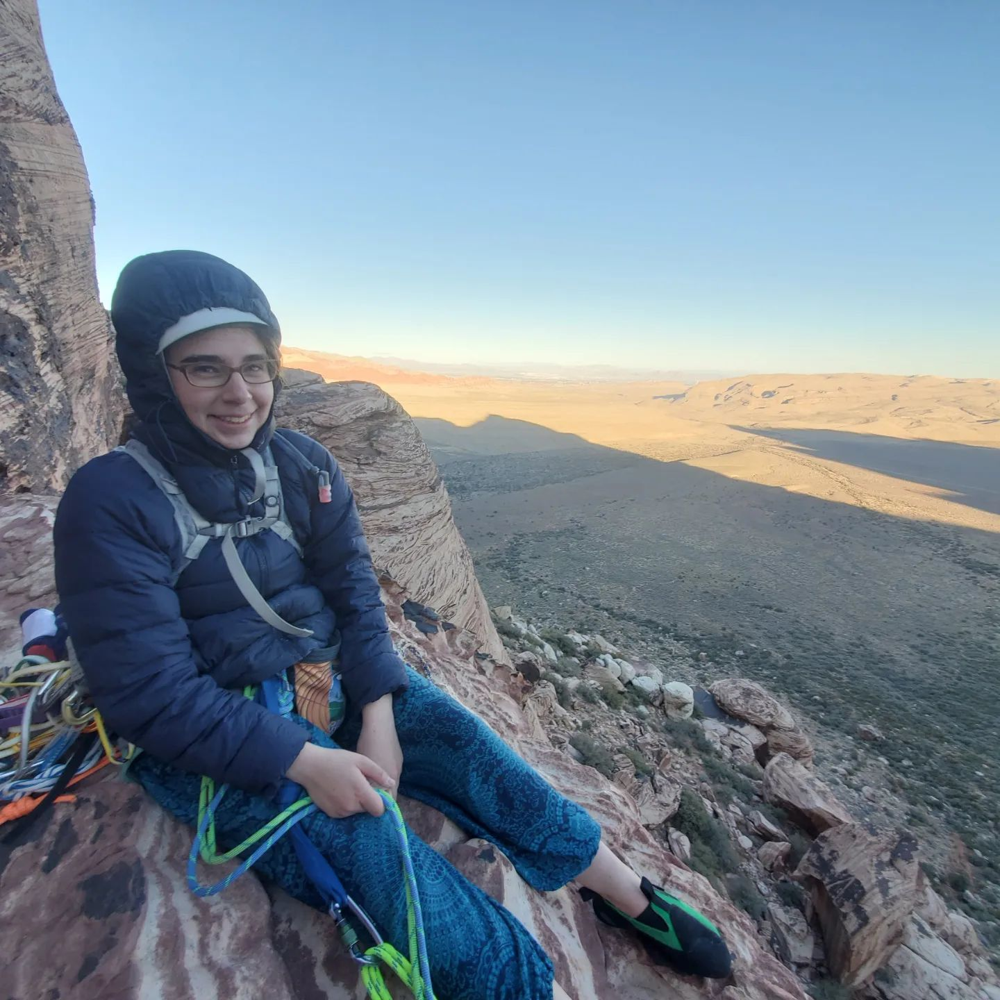

I am a third year PhD student in computer science at CSD @ Carnegie Mellon
University, advised by Frank Pfenning, working towards efficient
and usable functional programming languages. Current work has been on an adjoint natural deduction
system with the goal of compilation down to the semi axiomatic sequent calculus (which has a futures model of
parallelism
interpretation).
Previously, I was an undergraduate at Cornell University, where I worked
under Dexter Kozen and Pedro H. Azevedo de Amorim on categorical semantics for mixing
parallel and sequential operations. Pedro created this website template.
I am primarily interested in programming language design.
Email: sophiaroshal@cmu.edu
Twitter: @RoshalSophia
 
